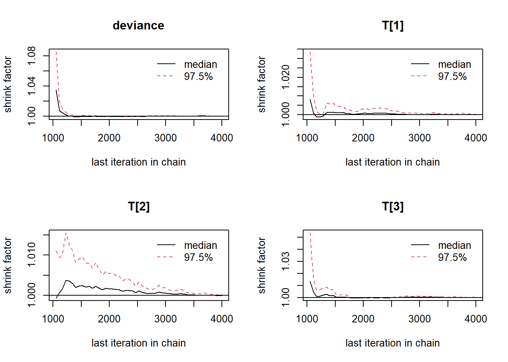

8.3 Example 1 - JAGS
# model code
jags.model.ctt1 <- function(){
############################################
# CLASSICAL TEST THEORY MODEL
# WITH KNOWN HYPERPARAMETERS
# TRUE SCORE MEAN, TRUE SCORE VARIANCE
# ERROR VARIANCE
############################################
############################################
# KNOWN HYPERPARAMETERS
############################################
mu.T <- 80 # Mean of the true scores
sigma.squared.T <- 36 # Variance of the true scores
sigma.squared.E <- 16 # Variance of the errors
tau.T <- 1/sigma.squared.T # Precision of the true scores
tau.E <- 1/sigma.squared.E # Precision of the errors
############################################
# MODEL FOR TRUE SCORES AND OBSERVABLES
############################################
for (i in 1:n) {
T[i] ~ dnorm(mu.T, tau.T) # Distribution of true scores
x[i] ~ dnorm(T[i], tau.E) # Distribution of observables
}
}
# data
mydata <- list(
n=3,
x=c(70, 80, 96)
)
# starting values
start_values <- function(){
list("T"=c(80,80,80))
}
# vector of all parameters to save
param_save <- c("T")
# fit model
fit <- jags(
model.file=jags.model.ctt1,
data=mydata,
inits=start_values,
parameters.to.save = param_save,
n.iter=4000,
n.burnin = 1000,
n.chains = 4,
n.thin=1,
progress.bar = "none")## Compiling model graph
## Resolving undeclared variables
## Allocating nodes
## Graph information:
## Observed stochastic nodes: 3
## Unobserved stochastic nodes: 3
## Total graph size: 13
##
## Initializing modelprint(fit)## Inference for Bugs model at "C:/Users/noahp/AppData/Local/Temp/RtmpSoNenU/model999c150077df.txt", fit using jags,
## 4 chains, each with 4000 iterations (first 1000 discarded)
## n.sims = 12000 iterations saved
## mu.vect sd.vect 2.5% 25% 50% 75% 97.5% Rhat n.eff
## T[1] 73.042 3.338 66.454 70.789 73.054 75.303 79.637 1.001 6600
## T[2] 79.964 3.334 73.438 77.701 79.932 82.230 86.546 1.001 12000
## T[3] 91.072 3.348 84.497 88.844 91.078 93.324 97.589 1.001 8300
## deviance 18.019 2.969 14.232 15.816 17.391 19.499 25.562 1.001 12000
##
## For each parameter, n.eff is a crude measure of effective sample size,
## and Rhat is the potential scale reduction factor (at convergence, Rhat=1).
##
## DIC info (using the rule, pD = var(deviance)/2)
## pD = 4.4 and DIC = 22.4
## DIC is an estimate of expected predictive error (lower deviance is better).# extract posteriors for all chains
jags.mcmc <- as.mcmc(fit)
R2jags::traceplot(jags.mcmc)


# gelman-rubin-brook
gelman.plot(jags.mcmc)
# convert to single data.frame for density plot
a <- colnames(as.data.frame(jags.mcmc[[1]]))
plot.data <- data.frame(as.matrix(jags.mcmc, chains=T, iters = T))
colnames(plot.data) <- c("chain", "iter", a)
plot_title <- ggtitle("Posterior distributions",
"with medians and 80% intervals")
mcmc_areas(
plot.data,
pars = c("T[1]", "T[2]", "T[3]"),
prob = 0.8) +
plot_title
# I prefer a posterior plot that includes prior and MLE
MLE <- mydata$x
prior_t <- function(x){dnorm(x, 80, 6)}
x.t<- seq(50.1, 100, 0.1)
prior.t <- data.frame(tr=x.t, dens.t = prior_t(x.t))
cols <- c("Posterior"="#0072B2", "Prior"="#E69F00", "MLE"= "black")#"#56B4E9", "#E69F00" "#CC79A7"
p1 <- ggplot()+
geom_density(data=plot.data,
aes(x=`T[1]`, color="Posterior"))+
geom_line(data=prior.t,
aes(x=tr, y=dens.t, color="Prior"))+
geom_vline(aes(xintercept=MLE[1], color="MLE"))+
scale_color_manual(values=cols, name=NULL)+
theme_bw()+
theme(panel.grid = element_blank())
p2 <- ggplot()+
geom_density(data=plot.data,
aes(x=`T[2]`, color="Posterior"))+
geom_line(data=prior.t,
aes(x=tr, y=dens.t, color="Prior"))+
geom_vline(aes(xintercept=MLE[2], color="MLE"))+
scale_color_manual(values=cols, name=NULL)+
theme_bw()+
theme(panel.grid = element_blank())
p3 <- ggplot()+
geom_density(data=plot.data,
aes(x=`T[3]`, color="Posterior"))+
geom_line(data=prior.t,
aes(x=tr, y=dens.t, color="Prior"))+
geom_vline(aes(xintercept=MLE[3], color="MLE"))+
scale_color_manual(values=cols, name=NULL)+
theme_bw()+
theme(panel.grid = element_blank())
p1 + p2 + p3 + plot_layout(guides="collect")